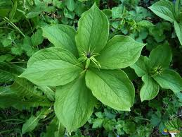

Parisette ou raisin de renard

Parisette ou raisin de renard (Paris quadrifolia de la famille des Liliacées)
Toxique pour le Korat.
Partie toxique pour les chats en général et le Korat en particulier :
Toute la plante mais surtout les baies.
Symptômes du processus pathologique :
Troubles digestifs, syncopes, arythmie cardiaque.
Origine de la toxicité (principe actif) :
La parasystiphine (paralysant respiratoire).